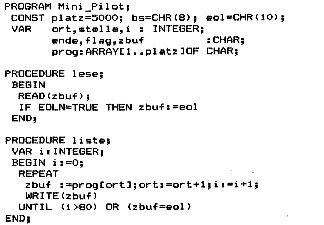

Nascom Journal |
Juli/August 1982 · Ausgabe 7/8 |
Die Speisen sind in 7 Gruppen eingeteilt (Zeile 9-12). Sie können natürlich andere oder weitere Speisen einbringen, diese hier sollen nur Beispiel sein. Geben Sie unter DATA erst die Gruppe an, dann Komma, dann das Gericht, solange der Speicherplatz reicht. Dar Inhalt der Zeile 6000 muß aber als letzte DATA-Anweisung stehen bleiben. Und nun guten Appetit Ihnen und besonders Ihrer Frau.
Angeregt durch einen Artikel in der Zeitschrift Byte soll hier ein Interpreter für ein Subset der Programmiersprache Pilot vorgestellt werden. Ein wesentliches Element dieser Sprache ist der Vergleich einer Eingabe mit einem vorgegebenen Zeichen und einer Entscheidung über den weiteren Verlauf. Der Interpreter verarbeitet Zeilen, an derem Anfang immer ein Befehl stehen muß. Folgende Befehle sind bekannt:
T:text |
bring ‚text‘ auf den Schirm |
A: |
erwartet Zeichen |
M:x |
vergleicht x mit dem eingegebenen Zeichen und setzt ein Flag (Y oder N) |
J:n |
bei n=0 Sprung zum letzten A: |
S: |
Beendet Programm, Sprung zum Editor |
Y N |
Bedingung vor einem Befehl, wird nur ausgeführt, wenn Flag gesetzt ist. |
* |
Markierung für Sprungbefehl |
Als guter Interpreter hat Mini Pilot auch einen Texteditor. Das Programm wird normal eingeben. Will man zum Programmanfang zurück, reicht das ‚&‘ Zeichen, mit Backspace läßt sich ein Fehler korrigieren, ‚/‘ zeigt die nächste Zeile. Soll eine Zeile ersetzt werden, werden die vorhergehenden gelistet, dann wird neu eingegeben. Die neue Zeile darf nicht größer als die fehlerhafte sein, sie muß mit ‚%‘ statt Newline abgeschlossen werden. Gestartet wird das Programm mit dem ‚$‘ Zeichen.
Obwohl die Sprache als Einstieg für Kinder gepriesen wird, kann ich keine großen Vorteile sehen. Deshalb ist der Interpreter ‚nur‘ in Pascal geschrieben, das geht schneller.
| Seite 18 von 60 |
|---|